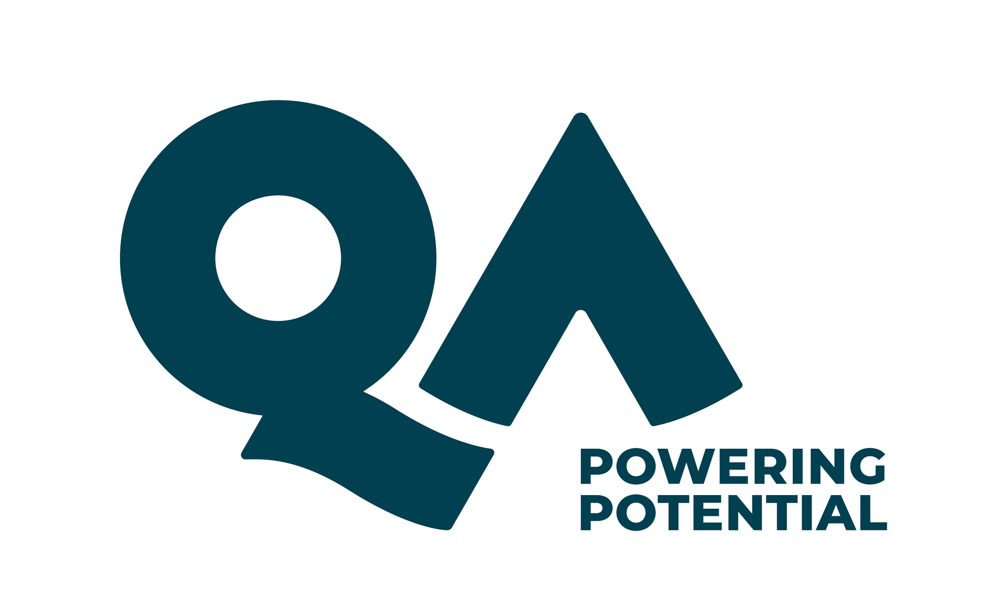

Architecture

Stack

Live Demo
| Hand | Hold | House |
|---|---|---|
| Fist | 3s | Lights ON |
| Open palm | 3s | Lights OFF |
| 1 / 2 / 3 fingers | 2s | Fan speed |
| Thumbs up | 2s | Fan STOP |
| Two fists | 2s | Door toggle |
| Wave / two palms | 2s | Security ON/OFF |
Keyboard (backup)
o on · f off · 1 2 3 fan · 0 stop ·
d door · s security · w fullscreen · q quit

Thank you
Questions?